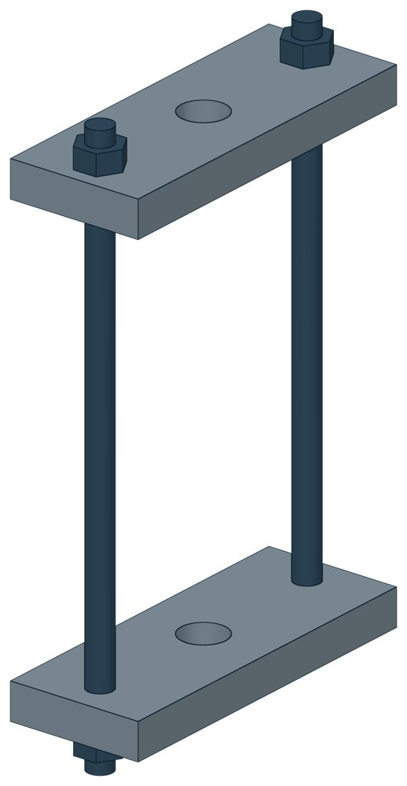

Разгружающие устройства для блоков пружин Т42
Серия 4.903-10 вып. 4, 5, 6. Допускаемая нагрузка — до 58,45 кН, масса 2,57–7,64 кг.

- Документ
- Серия 4.903-10 вып. 4, 5, 6
- Исполнений
- 10
- Допускаемая нагрузка
- до 5960 кгс
- Масса
- 2,57–7,64 кг
- 3D-модели
- у всех исполнений (условные: общий вид по габаритам)
Таблица исполнений Т42
| Обозначение | Код ПРОМБУРГ | Допускаемая нагрузкакгс | Диаметр тяги d | Нмм | Амм | Lмм | L1мм | Для блоков пружин | Для блоков пружин | Массакг | 3D |
|---|---|---|---|---|---|---|---|---|---|---|---|
| Т42.01 | ПБ-Т42-0000-1 | 534 | М12 | 220 | 120 | 150 | 58 | Т26.01 | Т26.11 | 2,6 | 3D |
| Т42.02 | ПБ-Т42-0000-2 | 816 | М16 | 220 | 120 | 150 | 58 | Т26.02 | Т26.12 | 2,57 | 3D |
| Т42.02 | ПБ-Т42-0000-3 | 1190 | М16 | 220 | 120 | 150 | 58 | Т26.03 | Т26.13 | 2,57 | 3D |
| Т42.02 | ПБ-Т42-0000-4 | 1666 | М16 | 220 | 120 | 150 | 58 | Т26.04 | Т26.14 | 2,57 | 3D |
| Т42.03 | ПБ-Т42-0000-5 | 2005 | М20 | 220 | 140 | 166 | 58 | Т26.05 | Т26.15 | 3,24 | 3D |
| Т42.03 | ПБ-Т42-0000-6 | 2686 | М20 | 220 | 140 | 166 | 58 | Т26.06 | Т26.16 | 3,24 | 3D |
| Т42.04 | ПБ-Т42-0000-7 | 3325 | М24 | 240 | 155 | 190 | 76 | Т26.07 | Т26.17 | 5,44 | 3D |
| Т42.04 | ПБ-Т42-0000-8 | 4080 | М24 | 240 | 155 | 190 | 76 | Т26.08 | Т26.18 | 5,44 | 3D |
| Т42.05 | ПБ-Т42-0000-9 | 4955 | М30 | 300 | 155 | 190 | 76 | Т26.09 | Т26.19 | 6,86 | 3D |
| Т42.06 | ПБ-Т42-0000-10 | 5960 | М30 | 300 | 180 | 220 | 78 | Т26.10 | Т26.20 | 7,64 | 3D |
Чтобы заказать, сообщите обозначение и код ПРОМБУРГ: +7 (499) 325-51-35, promburg@yandex.ru.
Нормативные документы
- Серия 4.903-10 Изделия и детали трубопроводов для тепловых сетей — документ, по которому изготавливается изделие — Не действует с 01.11.1990. Заменён: Серия 5.903-13. Изделие изготавливается по прежнему обозначению.
Связанные позиции
- Соседний тип: Т26 — Опоры жесткие подвесные пружинные
Другие типы раздела
Подвески и блоки пружинные (Т26…Т42)
- Опоры жесткие подвесные пружинные Т26
- Опоры жесткие подвесные пружинные, блоки Т27
- Опоры пружинные подвесные Т28
- Опоры пружинные подвесные Т29
- Опоры пружинные подвесные Т41
Частые вопросы
По какому диаметру подбирать — Dн или Ду?
По наружному диаметру трубы Dн: именно он стоит в таблицах серии. Ду — условный проход, округлённая величина: Ду 100 соответствует Dн 108. В заявке указывайте Dн и толщину стенки трубы.
В старом проекте нагрузка в тс, а здесь в кН. Как сравнить?
Серия 4.903-10 даёт нагрузки в тонна-силах, серия 5.903-13 — в килоньютонах. 1 тс = 9,81 кН, то есть 10 тс — это около 98 кН. В таблицах каталога переключатель единиц пересчитывает значения.
Из какой стали изготавливаются опоры?
По рабочим чертежам серии листовые детали — Ст3сп5 ГОСТ 14637-89, хомуты из круга — сталь 20 ГОСТ 1050-88. Для районов с низкой расчётной температурой воздуха применяется низколегированная сталь, в том числе 09Г2С; размеры опор при этом не меняются. В заявке укажите расчётную температуру наружного воздуха.
Почему часть поверхностей опоры не окрашена?
Поверхности под приварку к трубе и к несущей конструкции оставляют без краски, иначе шов получится некачественным. Их консервируют смазкой, которую снимают перед сваркой.
Что указать в заявке, чтобы получить цену без уточнений?
Обозначение с номером исполнения или код ПБ, количество, Dн и стенку трубы, расчётную температуру наружного воздуха, покрытие, город доставки и желаемый срок. Кнопка «В заявку» в таблице собирает спецификацию, которую можно выгрузить в Excel или отправить письмом.